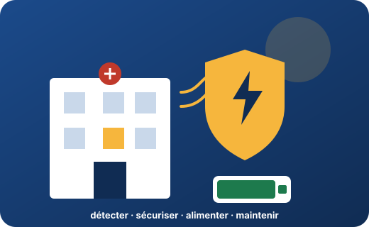

Consulteam × ADI sécurité
Habilitation électrique : formation initiale
Trois jours pour intervenir sans danger sur les installations de sécurité incendie : détecter, mettre en sécurité, alimenter, maintenir. Des cas du métier, des schémas à agrandir, des questions flash, et une évaluation à chaque étape.

⚡ Défi du jour
Chargement…
Jour 1 · 14 déc.
Comprendre et se situer
- Mission, titres, danger électrique
- Zones et voisinage
- BS, BE Manœuvre, secours
Jour 2 · 15 déc.
Le métier ADI en pratique
- Appareillage, équilibrage
- Remplacer, installer
- BR, consignation BC, SSI
Jour 3 · 16 déc.
Pratiquer et valider
- TP individualisés
- Évaluations théorique et pratique
- Avis après formation
Sécurité incendie : le métier d’ADI sécurité
DétecterDétecteurs, déclencheurs, ECSMettre en sécuritéCMSI, portes, clapets, désenfumageAlimenterSecteur, batterie, AESMaintenirVisite de vérification, dépannage
23modules, du socle à la haute tension
69images contrôlées, avec fiche de contrôle
333+questions d’évaluation et du cours
21 hdont 7 h de pratique
Le cours complet
Le socle électrique et les habilitations de base (B0, H0, H0V, BS, BE Manœuvre) sont dans le cours : chaque rubrique s’ouvre directement.
Socle électriqueLes bases, du danger au comportement sûr
Repères et approfondissementsCompléments aux habilitations, limites et vigilances
Qui fait quoi ?Rôles, symboles et limites de chacun
Cas métiersSituations génériques de maintenance, d’appareillage et de sécurité incendie
EntraînementQuestions de réactivation, par séquence
Travaux pratiquesAteliers et traces de mise en pratique
VidéothèqueVidéos et supports commentés
Livret du cours de baseLes huit séquences, à lire ou à imprimer
Les visuels de la formation
Voir toute la galerie · Médiathèque
Le parcours A260E2A
Mon parcours par objectifChoisissez votre symbole (B0, BS, BE, BR, BC, B1/B2, H1/H2, HC, HE) : le parcours conseillé se compose. 23 modules, tous accessibles.
Appareillage d’un tableauReconnaître, équilibrer, remplacer, installer : 4 modules et 8 schémas
Galerie69 images et 8 schémas à agrandir
Ouvrir le coursAccueil du cours complet
Aller plus loin en sécurité incendie
Spécificités sécurité incendieCentrale, alimentation, batteries, boucles, travail en hauteur : situer les opérations dans l’habilitationAccident, incendie, alerteProtéger, examiner, faire alerter, secourir
Vérifier ses acquis
Aller plus loin
Livret du participantLes modules rédigés, à imprimer en A4Suivre à distance ou hors ligneTéléphone, tablette, installation, sans connexionPuis-je remplacer ?Lampe, fusible, prise : arbres de décisionGlossaireLes termes de la formationRessources officiellesINRS, Légifrance, ConsuelMédiathèqueImages IA contrôlées, schémas légendésCrédits et limitesOrigine des contenus, ce qui n’est pas vérifié
Animer
Mode animationDiapositives plein écran pour la salle, module par module.Espace formateurDéroulé, matériel, vigilance, points à valider.
Chaque module en cinq phases
- Voir : la situation, les visuels à observer, la légende à ouvrir ensuite.
- Comprendre : le contenu, les procédures à dérouler pas à pas, un point d’arrêt à chaque étape.
- Faire : mise en situation et questions guidées, avec des coups de pouce.
- Vérifier : questions de contrôle sans aide, score immédiat.
- Retenir : objectif, liste « avant d’agir », impression.
Cadre. Les mises en pratique, l’évaluation individuelle et l’avis de l’employeur restent indispensables. Le titre d’habilitation et le carnet de prescriptions sont à vérifier avant la session : ce support ne les remplace pas. Les contenus marqués « à valider » n’ont pas encore été relus par le formateur ; la NF C 18-510 n’a pas été lue dans le texte payant.
Les scénarios sont génériques : les installations, les prescriptions et les procédures d’ADI sécurité se précisent avec les participants pendant la session. Aucune donnée nominative n’est publiée ici.